Redkale 入门教程 01 -- Hello Word！
Redkale 可以说是Java界最精简的框架，不到1M的jar包可以替代Tomcat、Spring/Spring Boot、Hibernate/MyBatis、JackJson/fastjson、Netty的集合，四两拨千斤。低调开源一年多，经过两次大的改善后终于达到让自己满意的地步。Redkale不仅仅提供简易的API，还附有很多不同于传统思维的设计思路。由于时间有限，一年多也没写入门教程，现在开始抽点时间写一些教程，希望能给想学Redkale的同学一点帮助。 废话不多说，下面进入正题。
下载Redkale
源码可以从 https://github.com/redkale 和 http://git.oschina.net/redkale/redkale 下载 。
jar包可以从 http://search.maven.org 和 https://repo1.maven.org/maven2/org/redkale/redkale/ 下载最新版本的包。
当前最新版为 1.8， 下载 redkale-1.8.0.tar.gz 放在本地。
创建工程
本人使用NetBeans很多年了，所以本教程以NetBeans来创建工程， 使用Eclipse的同学请自行参考。
IntelliJ IDEA 使用者见 Redkale 入门教程 01 -- Hello Word！(IntelliJ IDEA Maven版)。
首先创建一个"Java应用程序"项目, 注意： 不管是否Web项目，都不要创建Web应用程序。
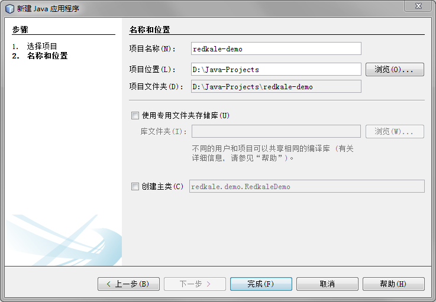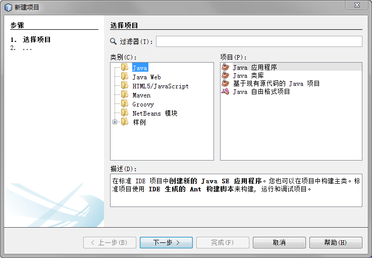
创建完空项目后，将 redkale-1.8.0.tar.gz 解压覆盖到项目的目录下。
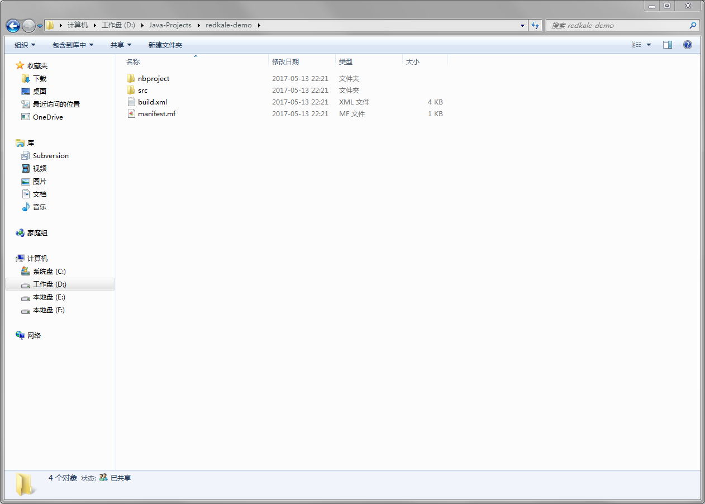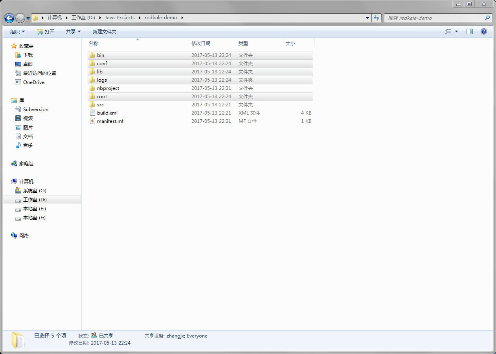
点击项目右键进入“属性”-> “库”中，点击 “添加JAR/文件夹”找到项目lib目录下的redkale-1.8.0.jar 并导入。
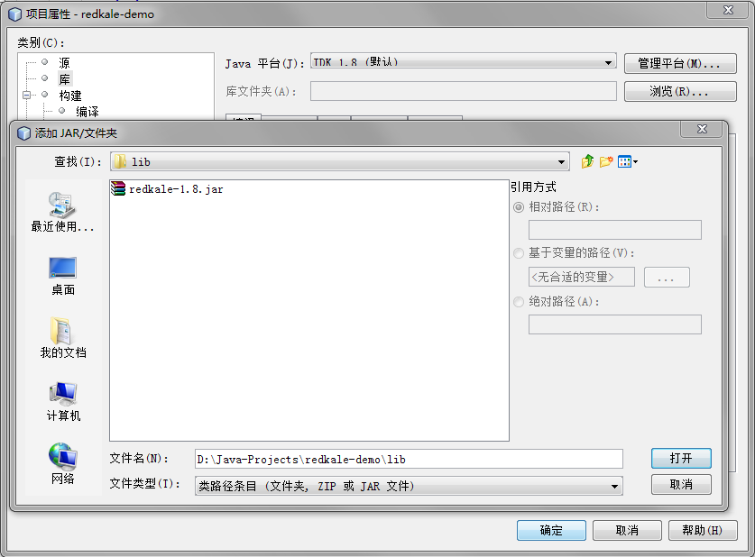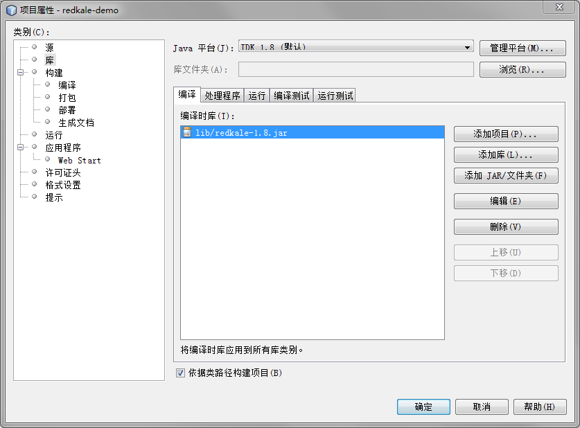
点击“源”，在下面测试包中导入项目目录下的conf目录，这样方便编辑conf下的配置文件(在上面src中导入会打包进jar中)。
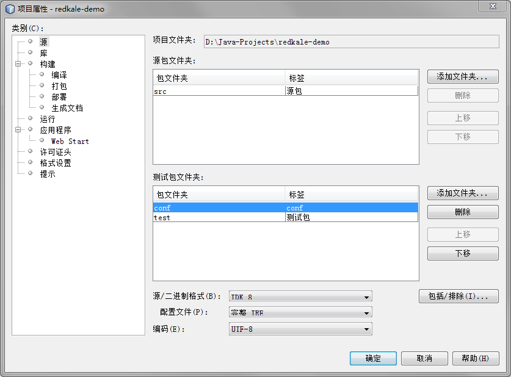
点击“运行”，在主类中输入 "org.redkale.boot.Application"，然后点击“确定”。
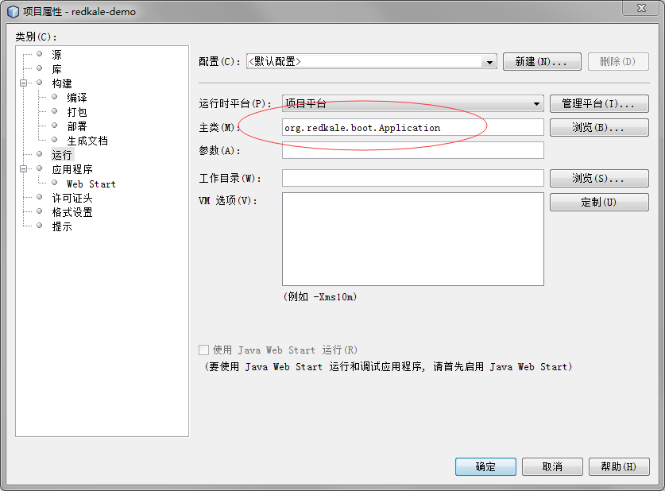
编写HelloService类。
package com.redkale.demo;
import org.redkale.net.http.*;
import org.redkale.service.Service;
@RestService(automapping = true)
public class HelloService implements Service {
public String sayHello() {
return "Hello World！";
}
public String hi(String name) {
return "Hi, " + name + "！";
}
}
此类提供两个方法：say 和 hi。编写完后按"F6" 直接运行。
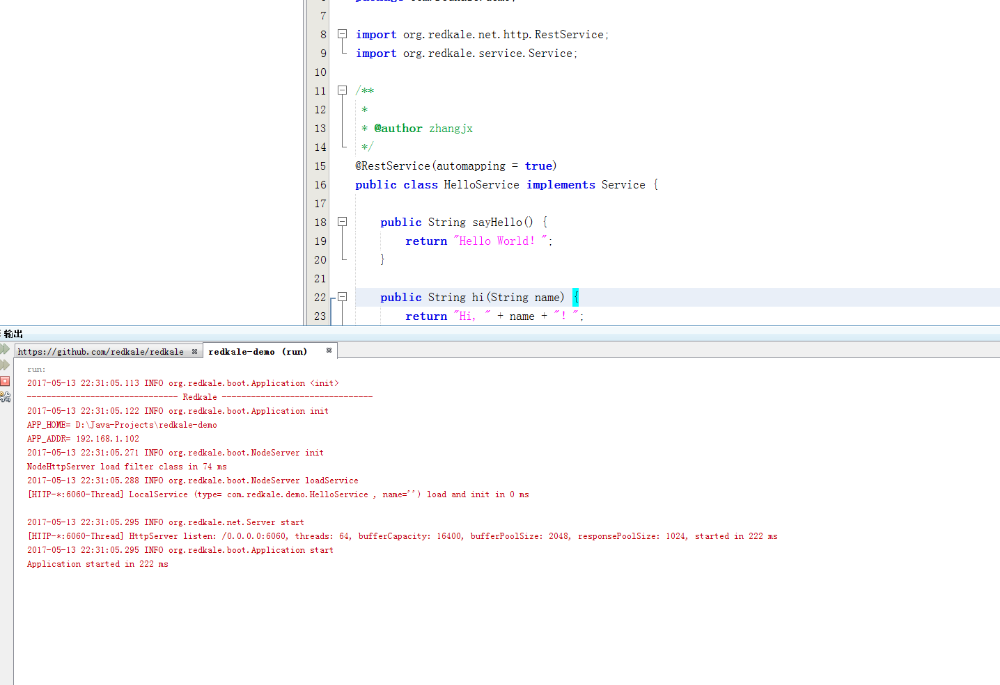
在浏览器输入: http://127.0.0.1:6060/pipes/hello/say 可以看到结果：
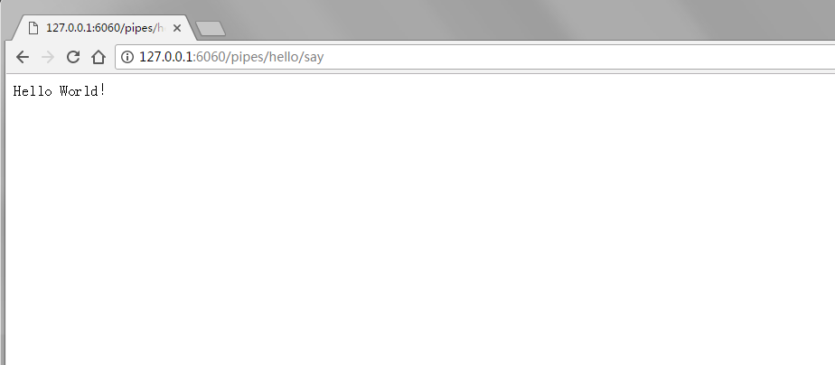
在浏览器输入: http://127.0.0.1:6060/pipes/hello/hi?name=Redkale 可以看到结果：
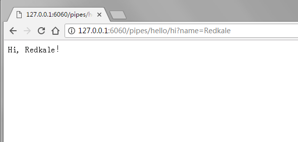
访问地址的端口6060和前缀pipes是通过conf/application.xml文件进行配置：
<application port="5050">
<!-- 详细配置说明见： http://redkale.org/redkale.html#redkale_confxml -->
<resources>
<!--
<properties>
<property name="system.property.convert.json.tiny" value="true"/>
</properties>
-->
</resources>
<server protocol="HTTP" host="0.0.0.0" port="6060" root="root">
<services autoload="true"/>
<!-- base指定的自定义HttpServlet子类必须标记@HttpUserType, 不设置base则视为没有当前用户信息设置 -->
<rest path="/pipes" autoload="true" />
<servlets path="/pipes" autoload="true" />
</server>
</application>
至此，一个简单的Hello服务就开发和调试完成了。可以看出，代码简单很多，不需要太多配置、maven和其他依赖包。
可能有人会疑惑: HelloServie为什么能分配到hello前缀？ sayHello为什么会映射到/pipes/hello/say 请求？ Redkale为了减少Annotation配置采取了一些默认值的策略， 在Redkale里， 一个Service视为一个模块或服务，所以需要有模块(服务)名的概念，用于服务管理和鉴权，通常需要通过@RestServie.name来指定模块名，没有指定则默认将Service类名的Service字样之前的字符串视为模块名，如HelloService和HelloServiceImpl都会采用hello作为模块名。方法名的默认值策略也是类似，将模块名字样之前的字符串作为方法名，如sayHello和sayHelloMe 都会用say作为默认值。参数名如果没有指定@RestParam.name会自动采用代码的变量名。 完全标记Rest注解的HelloService源码如下：
package com.redkale.demo;
import org.redkale.net.http.*;
import org.redkale.service.Service;
@RestService(name = "hello")
public class HelloService implements Service {
@RestMapping(name = "say")
public String sayHello() {
return "Hello World！";
}
@RestMapping(name = "hi")
public String hi(@RestParam(name = "name") String name) {
return "Hi, " + name + "！";
}
}
这段代码与上面那段是等价的。部署也很简单， 将项目目录中dist目录下的redkale-demo.jar复制到lib下，运行bin/start.bat 即可启动HTTP服务。